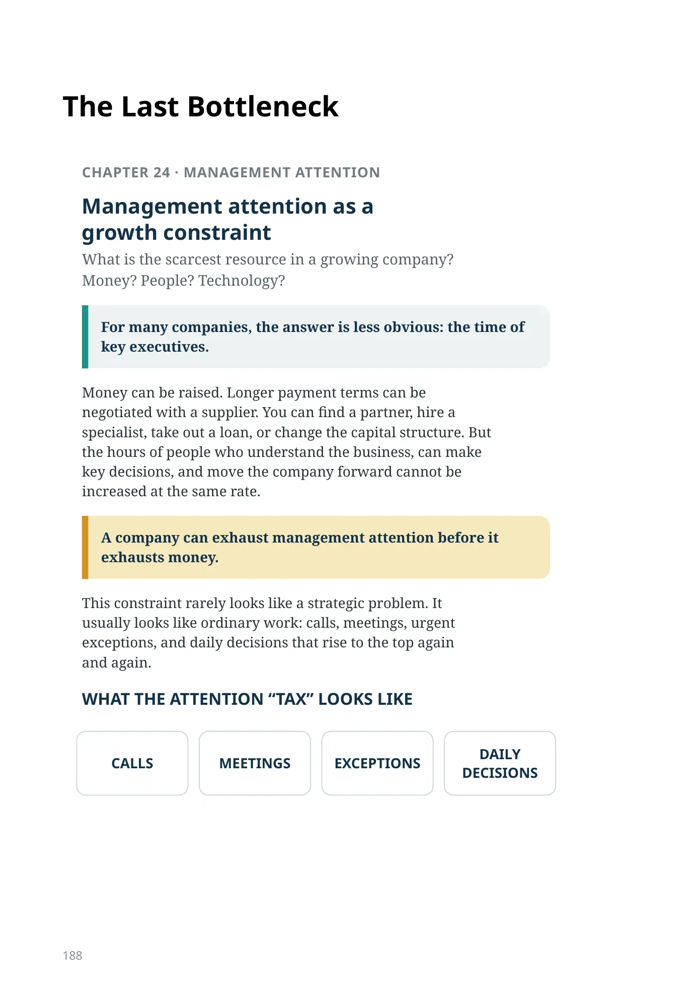
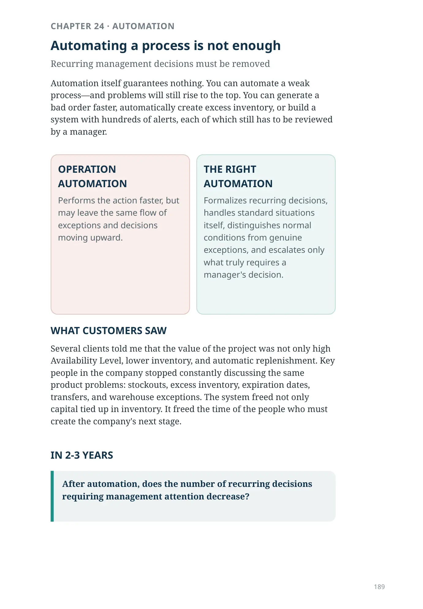
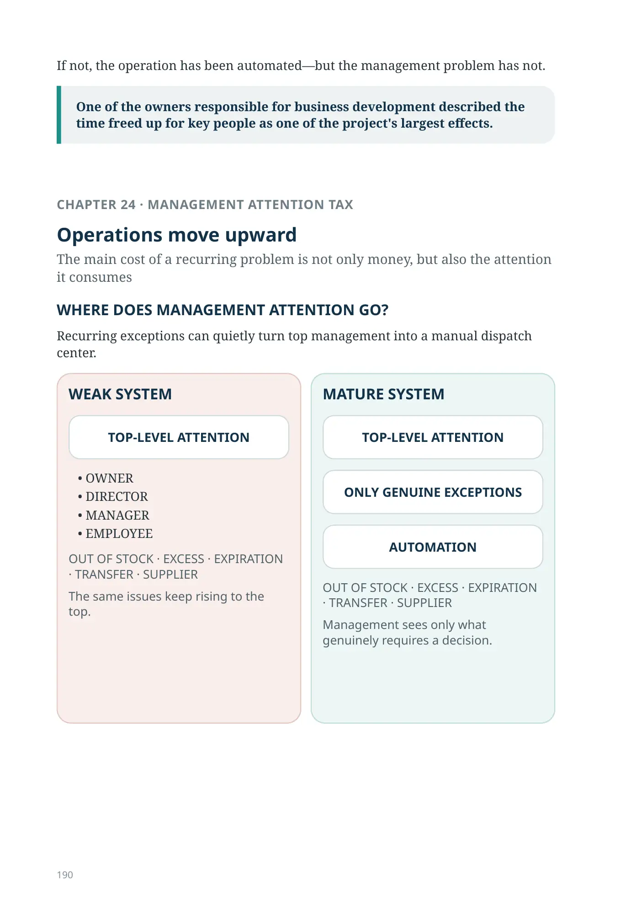
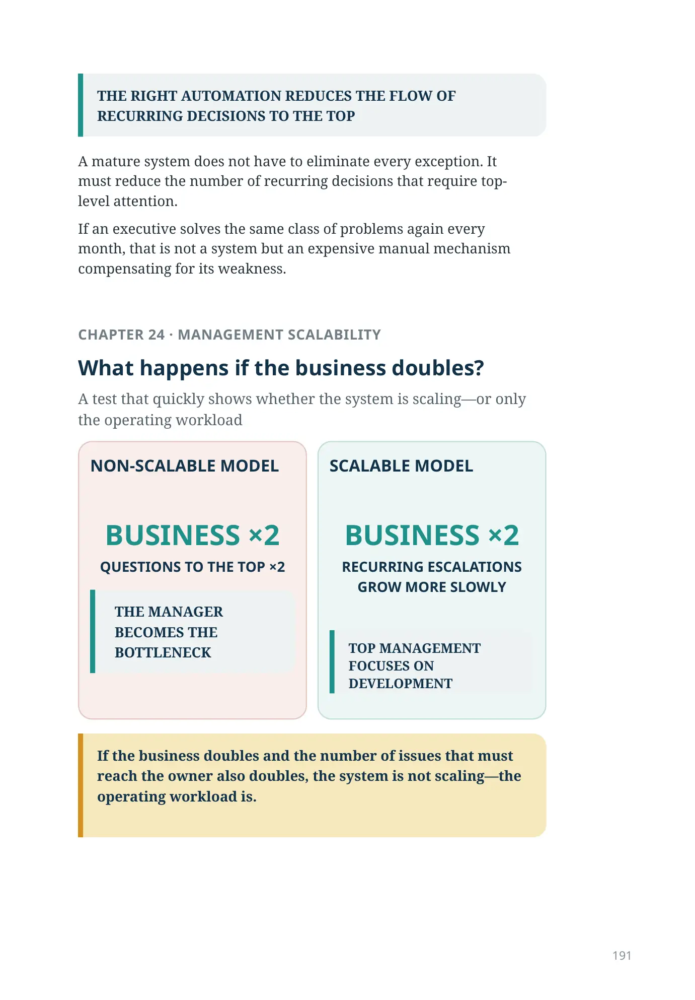
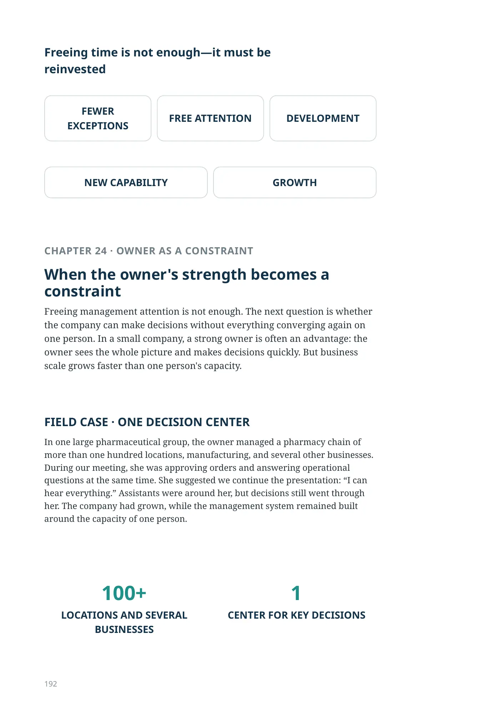
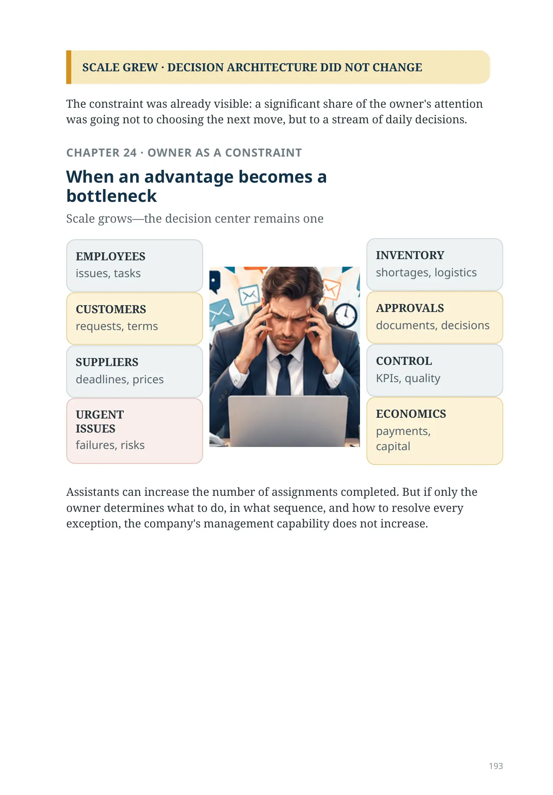
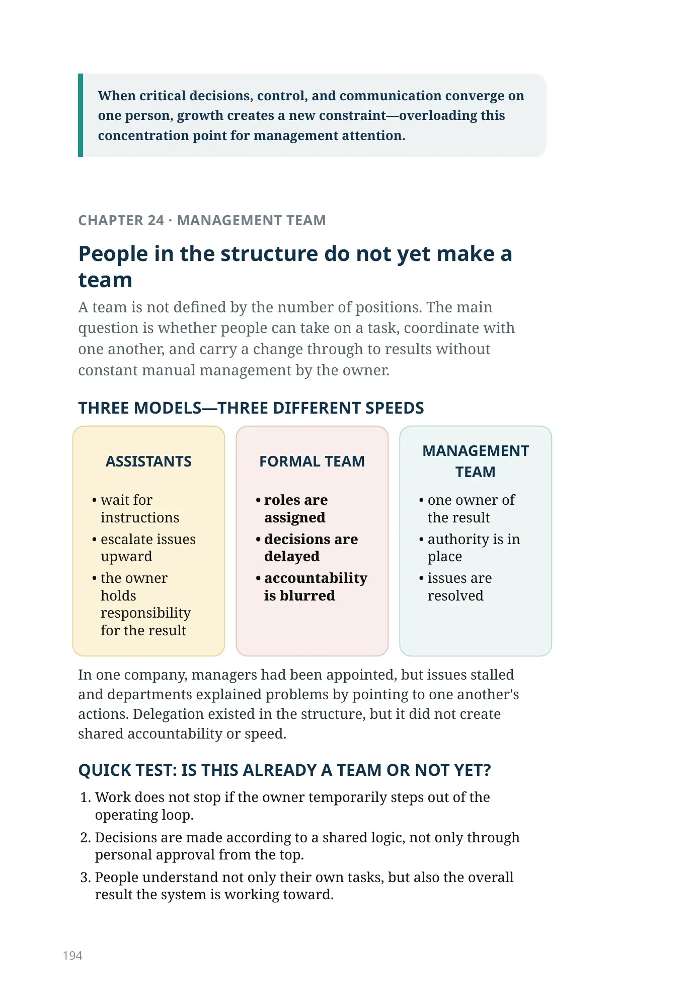
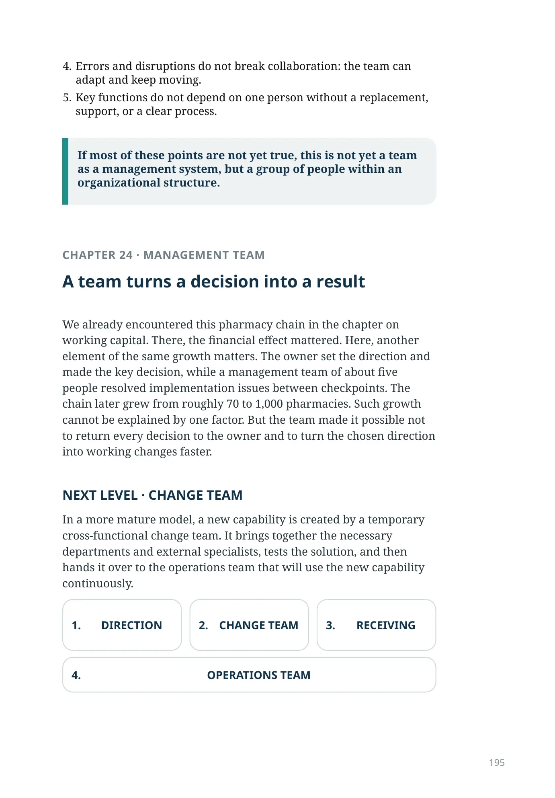
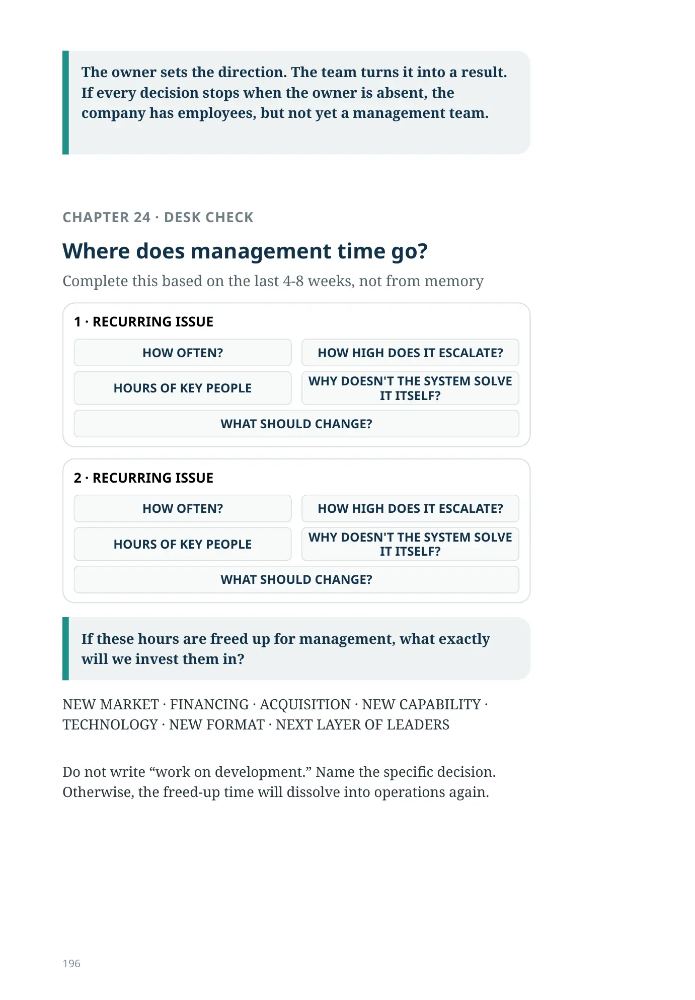
The Last Bottleneck
CHAPTER 24 · MANAGEMENT ATTENTION
Management attention as a growth constraint
What is the scarcest resource in a growing company? Money? People? Technology?
For many companies, the answer is less obvious: the time of key executives.
Money can be raised. Longer payment terms can be negotiated with a supplier. You can find a partner, hire a specialist, take out a loan, or change the capital structure. But the hours of people who understand the business, can make key decisions, and move the company forward cannot be increased at the same rate.
A company can exhaust management attention before it exhausts money.
This constraint rarely looks like a strategic problem. It usually looks like ordinary work: calls, meetings, urgent exceptions, and daily decisions that rise to the top again and again.
WHAT THE ATTENTION “TAX” LOOKS LIKE
CALLS
MEETINGS
EXCEPTIONS
DAILY DECISIONS
CHAPTER 24 · AUTOMATION
Automating a process is not enough
Recurring management decisions must be removed
Automation itself guarantees nothing. You can automate a weak process—and problems will still rise to the top. You can generate a bad order faster, automatically create excess inventory, or build a system with hundreds of alerts, each of which still has to be reviewed by a manager.
OPERATION AUTOMATION
Performs the action faster, but may leave the same flow of exceptions and decisions moving upward.
THE RIGHT AUTOMATION
Formalizes recurring decisions, handles standard situations itself, distinguishes normal conditions from genuine exceptions, and escalates only what truly requires a manager's decision.
WHAT CUSTOMERS SAW
Several clients told me that the value of the project was not only high Availability Level, lower inventory, and automatic replenishment. Key people in the company stopped constantly discussing the same product problems: stockouts, excess inventory, expiration dates, transfers, and warehouse exceptions. The system freed not only capital tied up in inventory. It freed the time of the people who must create the company's next stage.
IN 2-3 YEARS
After automation, does the number of recurring decisions requiring management attention decrease?
If not, the operation has been automated—but the management problem has not.
One of the owners responsible for business development described the time freed up for key people as one of the project's largest effects.
CHAPTER 24 · MANAGEMENT ATTENTION TAX
Operations move upward
The main cost of a recurring problem is not only money, but also the attention it consumes
WHERE DOES MANAGEMENT ATTENTION GO?
Recurring exceptions can quietly turn top management into a manual dispatch center.
WEAK SYSTEM
TOP-LEVEL ATTENTION
- OWNER
- DIRECTOR
- MANAGER
- EMPLOYEE
OUT OF STOCK · EXCESS · EXPIRATION · TRANSFER · SUPPLIER
The same issues keep rising to the top.
MATURE SYSTEM
TOP-LEVEL ATTENTION
ONLY GENUINE EXCEPTIONS
AUTOMATION
OUT OF STOCK · EXCESS · EXPIRATION · TRANSFER · SUPPLIER
Management sees only what genuinely requires a decision.
THE RIGHT AUTOMATION REDUCES THE FLOW OF RECURRING DECISIONS TO THE TOP
A mature system does not have to eliminate every exception. It must reduce the number of recurring decisions that require top-level attention.
If an executive solves the same class of problems again every month, that is not a system but an expensive manual mechanism compensating for its weakness.
CHAPTER 24 · MANAGEMENT SCALABILITY
What happens if the business doubles?
A test that quickly shows whether the system is scaling—or only the operating workload
NON-SCALABLE MODEL
BUSINESS ×2 QUESTIONS TO THE TOP ×2
THE MANAGER BECOMES THE BOTTLENECK
SCALABLE MODEL
BUSINESS ×2 RECURRING ESCALATIONS GROW MORE SLOWLY
TOP MANAGEMENT FOCUSES ON DEVELOPMENT
If the business doubles and the number of issues that must reach the owner also doubles, the system is not scaling—the operating workload is.
Freeing time is not enough—it must be reinvested
FEWER EXCEPTIONS
FREE ATTENTION
DEVELOPMENT
NEW CAPABILITY
GROWTH
CHAPTER 24 · OWNER AS A CONSTRAINT
When the owner's strength becomes a constraint
Freeing management attention is not enough. The next question is whether the company can make decisions without everything converging again on one person. In a small company, a strong owner is often an advantage: the owner sees the whole picture and makes decisions quickly. But business scale grows faster than one person's capacity.
FIELD CASE · ONE DECISION CENTER
In one large pharmaceutical group, the owner managed a pharmacy chain of more than one hundred locations, manufacturing, and several other businesses. During our meeting, she was approving orders and answering operational questions at the same time. She suggested we continue the presentation: “I can hear everything.” Assistants were around her, but decisions still went through her. The company had grown, while the management system remained built around the capacity of one person.
100+ LOCATIONS AND SEVERAL BUSINESSES
1 CENTER FOR KEY DECISIONS
SCALE GREW · DECISION ARCHITECTURE DID NOT CHANGE
The constraint was already visible: a significant share of the owner's attention was going not to choosing the next move, but to a stream of daily decisions.
CHAPTER 24 · OWNER AS A CONSTRAINT
When an advantage becomes a bottleneck
Scale grows—the decision center remains one
issues, tasks
requests, terms
deadlines, prices
failures, risks
shortages, logistics
documents, decisions
KPIs, quality
payments, capital
Assistants can increase the number of assignments completed. But if only the owner determines what to do, in what sequence, and how to resolve every exception, the company's management capability does not increase.
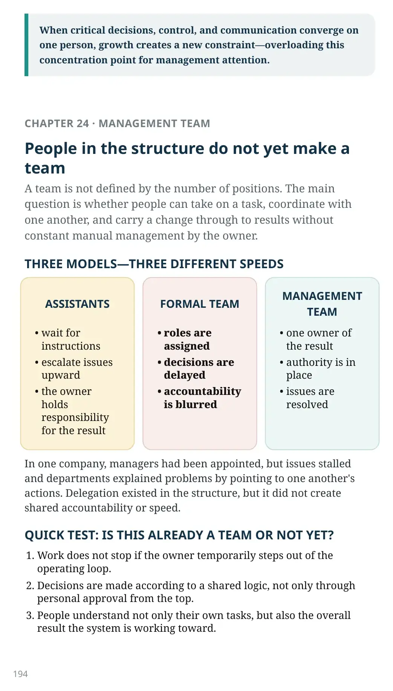
When critical decisions, control, and communication converge on one person, growth creates a new constraint—overloading this concentration point for management attention.
CHAPTER 24 · MANAGEMENT TEAM
People in the structure do not yet make a team
A team is not defined by the number of positions. The main question is whether people can take on a task, coordinate with one another, and carry a change through to results without constant manual management by the owner.
THREE MODELS—THREE DIFFERENT SPEEDS
ASSISTANTS
- wait for instructions
- escalate issues upward
- the owner holds responsibility for the result
FORMAL TEAM
- roles are assigned
- decisions are delayed
- accountability is blurred
MANAGEMENT TEAM
- one owner of the result
- authority is in place
- issues are resolved
In one company, managers had been appointed, but issues stalled and departments explained problems by pointing to one another's actions. Delegation existed in the structure, but it did not create shared accountability or speed.
QUICK TEST: IS THIS ALREADY A TEAM OR NOT YET?
- Work does not stop if the owner temporarily steps out of the operating loop.
- Decisions are made according to a shared logic, not only through personal approval from the top.
- People understand not only their own tasks, but also the overall result the system is working toward.
- Errors and disruptions do not break collaboration: the team can adapt and keep moving.
- Key functions do not depend on one person without a replacement, support, or a clear process.
If most of these points are not yet true, this is not yet a team as a management system, but a group of people within an organizational structure.
CHAPTER 24 · MANAGEMENT TEAM
A team turns a decision into a result
We already encountered this pharmacy chain in the chapter on working capital. There, the financial effect mattered. Here, another element of the same growth matters. The owner set the direction and made the key decision, while a management team of about five people resolved implementation issues between checkpoints. The chain later grew from roughly 70 to 1,000 pharmacies. Such growth cannot be explained by one factor. But the team made it possible not to return every decision to the owner and to turn the chosen direction into working changes faster.
NEXT LEVEL · CHANGE TEAM
In a more mature model, a new capability is created by a temporary cross-functional change team. It brings together the necessary departments and external specialists, tests the solution, and then hands it over to the operations team that will use the new capability continuously.
- DIRECTION
- CHANGE TEAM
- RECEIVING
- OPERATIONS TEAM
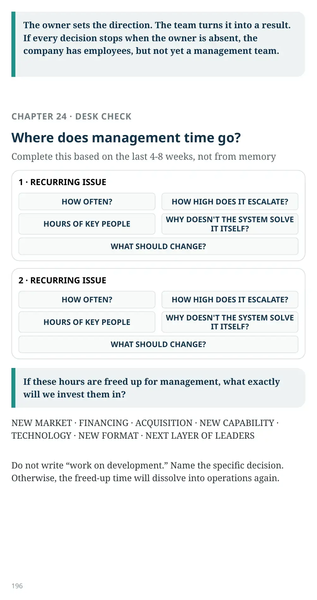
The owner sets the direction. The team turns it into a result. If every decision stops when the owner is absent, the company has employees, but not yet a management team.
CHAPTER 24 · DESK CHECK
Where does management time go?
Complete this based on the last 4-8 weeks, not from memory
If these hours are freed up for management, what exactly will we invest them in?
NEW MARKET · FINANCING · ACQUISITION · NEW CAPABILITY · TECHNOLOGY · NEW FORMAT · NEXT LAYER OF LEADERS
Do not write “work on development.” Name the specific decision. Otherwise, the freed-up time will dissolve into operations again.